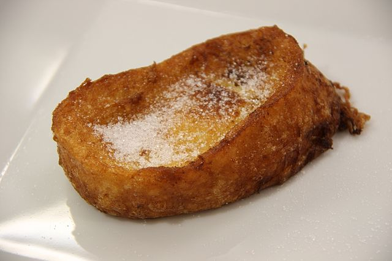

Torrijas

Description
Sweet bread slices soaked in a milk, dipped in eggs, fried until golden,
and coated in a sugary cinnamon blend. A crispy and delightful traditional Spanish dessert.
Ingredients
- 1 loaf of day-old bread (baguette works well)
- 4 cups whole milk
- 2 eggs
- Olive oil (for frying)
- granulated sugar and ground cinnamon (for dusting)
Steps
- Slice the bread into 1-inch thick slices.
- Dip each bread slice into the milk, ensuring it is well-soaked but not falling apart.
- Whisk the eggs and dip each slice of bread into them.
- Fry until golden brown on both sides. Place the fried torrijas on a plate lined with paper towels to absorb excess oil.
- While the torrijas are still warm, roll them in a mixture of sugar and ground cinnamon until coated evenly.
Try boiling the milk with cinnamon and lemon for extra flavour, but wait until it cools before using it in the recipe!